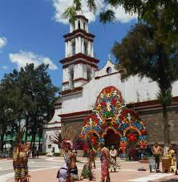
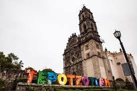

ECATEPEC DE MORELOS
facebook/parroquiadesancristobal
Ecatepec o Ehecatepetl que en lengua náhuatl significa "cerro del viento". Sus atractivos destaca piedra equinoccial, la casa de Morelos, el parque ecológico echécatj, entre otros.
TEPOTZOTLÁN
commons.dimisionperiodistica.
Pueblo mágico donde encontrarás; mercado de artesanias, donde podrás caminar en medio de sus puestos multicolores, andar por sus verdes parques o por su antiguo acueducto, y develar sus historias añejas mientras tus oídos se deleitan con la música tradicional del pueblo.
TOLUCA

commonshttp://www.suiteslofts.com/.CC-SA
Toluca sentirás el viento que viene de sus tranquilos parajes en la montaña, además de disfrutar de la mezcla de sus bosques de alpinos, que en su cima esconden sus lagos cristalinos, de sus majestuosos volcanes y de sus ruinas milenarias.
TEOTIHUACÁN
commons.CC-SA
Vuelos en globo, recorridos en safari, desayunos en La Gruta y recorridos en bicicleta, son algunas sugerencias de que hacer en Teotihuacán.